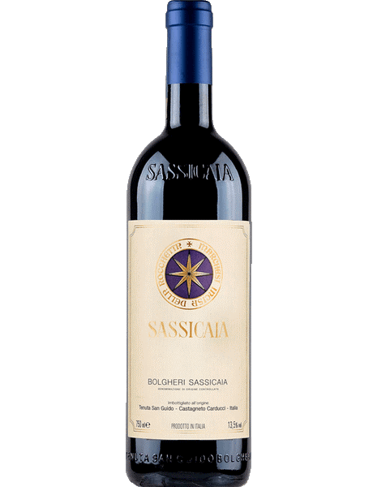

Produtos

Chateau Margaux
Vinho Tinto
Um dos mais prestigiados vinhos de Bordeaux. Elegante, complexo e longevo, com notas de cassis, flores e especiarias

Sassicaia
Vinho Tinto
Ícone italiano da Toscana, combina Cabernet Sauvignon e Franc em um estilo “bordalês” com alma italiana. Estruturado e sofisticado.

Penfolds Grange
Vinho Tinto
O vinho mais célebre da Austrália. Potente, encorpado e envelhecível, feito com predominância de Shiraz.

Domaine Leflaive Puligny-Montrachet
Vinho Branco
Um dos melhores Chardonnays do mundo, com textura cremosa, acidez vibrante e mineralidade marcante.

Cloudy Bay Sauvignon Blanc
Vinho Branco
Ícone da Nova Zelândia. Aromático, cítrico, fresco e com um toque tropical que o tornou famoso mundialmente.

Chablis Grand Cru Les Clos – William Fèvre
Vinho Branco
Um dos maiores Chardonnays da Borgonha. Puro, cortante, com notas de pedra, limão e manteiga.